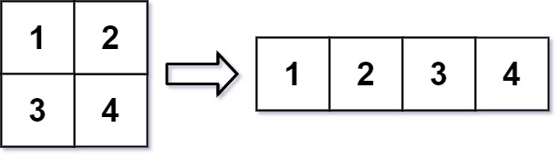
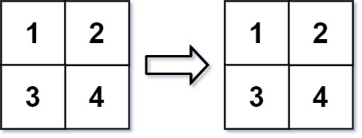

566. 重塑矩阵
两个矩阵按行优先展开是同一条序列：第 k 个元素原在 (k/n, k%n)、新在 (k/c, k%c)，直接搬运。
思路
- 先判合法性：
m*n != r*c就原样返回mat。 - 一维展开下新旧下标一一对应：
out[k/c][k%c] = mat[k/n][k%n]，一遍循环填完，不用真的展平。
图解
最优解
1class Solution {2 public int[][] matrixReshape(int[][] mat, int r, int c) {3 int m = mat.length, n = mat[0].length;4 // 元素个数对不上就不是合法重塑，原样返回5 if (m * n != r * c) return mat;6 int[][] out = new int[r][c];7 // 两个矩阵按行优先展开是同一条序列：第 k 个元素原在 (k/n, k%n)，新在 (k/c, k%c)8 for (int k = 0; k < m * n; k++) {9 out[k / c][k % c] = mat[k / n][k % n];10 }11 return out;12 }13}题目
在 MATLAB 中，有一个非常有用的函数 reshape ，它可以将一个 m x n 矩阵重塑为另一个大小不同（r x c）的新矩阵，但保留其原始数据。
给你一个由二维数组 mat 表示的 m x n 矩阵，以及两个正整数 r 和 c ，分别表示想要的重构的矩阵的行数和列数。
重构后的矩阵需要将原始矩阵的所有元素以相同的 行遍历顺序 填充。
如果具有给定参数的 reshape 操作是可行且合理的，则输出新的重塑矩阵；否则，输出原始矩阵。
示例 1：

输入：mat = [[1,2],[3,4]], r = 1, c = 4 输出：[[1,2,3,4]]
示例 2：

输入：mat = [[1,2],[3,4]], r = 2, c = 4 输出：[[1,2],[3,4]]
提示：
m == mat.lengthn == mat[i].length1 <= m, n <= 100-1000 <= mat[i][j] <= 10001 <= r, c <= 300
题面取自力扣当前版本。
数据快照 2026-11-04。题面版权归力扣所有，本站点仅供本人学习使用，请勿对外发布。